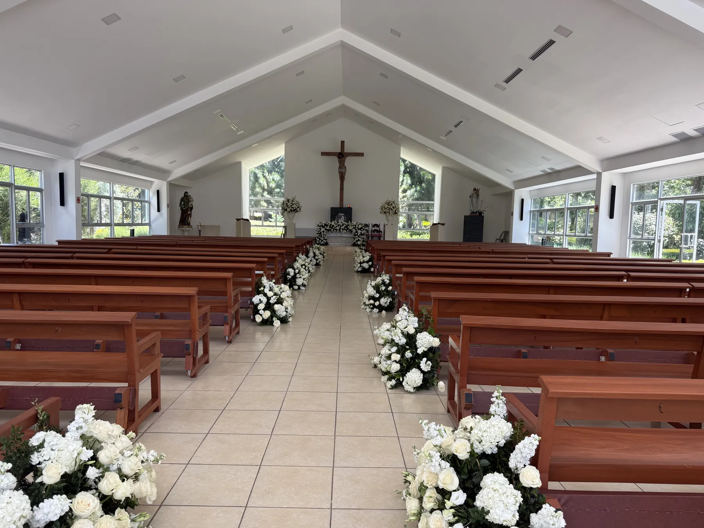

Inicio / Bodas
Sacramento del matrimonioRequisitos para casarse en Onuva
Todo lo que necesitan saber para celebrar su boda en la capilla o en el templo grande de la Parroquia Nuestra Señora de las Gracias, en Santa Tecla.
“Tanto el templo como la capilla son lugares sagrados, y lo que ustedes solicitan es la celebración de un sacramento.”
La parroquia no presta el templo como un negocio, sino como un servicio. Aquí se celebra solo la ceremonia religiosa; la fiesta será en otro lugar.
Les pedimos leer con calma esta página, reunir sus documentos y compartir las normas con sus invitados para mantener el orden y la limpieza del templo y la capilla.
¿Cuál es la ofrenda para casarse en Onuva?
En la capilla la ofrenda es de $200, sin depósito. En el templo grande la ofrenda es de $350, más un depósito de $100 que sirve de reserva y se devuelve si se respetan las normas.
| Concepto | Ofrenda |
|---|---|
| CapillaPara unas 50 personas. Ofrenda única: no lleva depósito y no tiene aire acondicionado. | $200 |
| Templo grandePara unas 300 personas. | $350 |
| Depósito del templo grandeSirve de reserva. Se devuelve después de la boda si se respetan las normas; si no se respetan, no se devuelve. La capilla no lleva depósito. | $100 |
| Aire acondicionado (opcional)Ofrenda adicional, solo en el templo grande, si lo desean. La capilla no tiene aire acondicionado. | $100 |
| Ensayo de boda | $25 |
¿Qué documentos necesitan?
Solo se agenda la cita del expediente si tienen toda la documentación completa. Marquen cada documento a medida que lo tengan.
¿No viven en nuestro territorio parroquial? Pidan el permiso matrimonial en la parroquia que les corresponde (la más cercana a donde residen) y preséntenlo junto con sus documentos.
¿Cómo se abre el expediente matrimonial?
El expediente se abre un mes y medio antes de la boda, no días ni semanas antes.
Reúnan todos los documentos
Sin la documentación completa no se puede agendar la cita.
Agenden la cita del expediente
Contacten a la oficina parroquial por WhatsApp al +503 6028-1718 (solo mensajes) para agendar.
Completen la ficha matrimonial
Se la enviamos por WhatsApp. Envíenla completa un día antes de venir a la cita.
Abran el expediente
Un mes y medio antes de la boda, con todos sus documentos y la ficha.
Ensayo y celebración
La ofrenda por el ensayo es de $25. El día de la boda, la celebración no debe superar las dos horas.
Normas para el uso del templo y la capilla
Estas normas aplican a toda celebración. Es muy importante que sus invitados las conozcan para mantener el orden y la limpieza.
- Respetar el tiempo de la celebración, que no debe superar las dos horas, para dejar el templo libre.
- No se permite traer equipos de aire acondicionado propios. El templo grande cuenta con aire acondicionado opcional (ofrenda adicional de $100); la capilla no tiene.
- No fumar dentro ni fuera del templo ni en los baños, ni ingresar bebidas alcohólicas.
- No utilizar alambre ni tirro para sujetar arreglos florales.
- No manchar las paredes del templo ni los sanitarios.
- No lanzar arroz, pétalos, confeti ni nada que pueda manchar, dentro ni fuera del templo.
- No cortar las plantas del jardín.
- No rayar las bancas con llaves, monedas u otros objetos. No pararse en los reclinatorios.
- En caso de daño o deterioro, deberá cancelar su costo.
- Depositar los papeles sucios en las papeleras y hacer buen uso del papel toalla y el papel de baño.
- Acompañar a los niños al sanitario para que hagan buen uso de las instalaciones.
- No llevarse nada de la iglesia.
- No se permiten cilindros con agua ni velas para la decoración.
- Los arreglos florales deben presentarse para ser aprobados.
¿Listos para reservar?
Escriban a la oficina parroquial para consultar fechas disponibles.